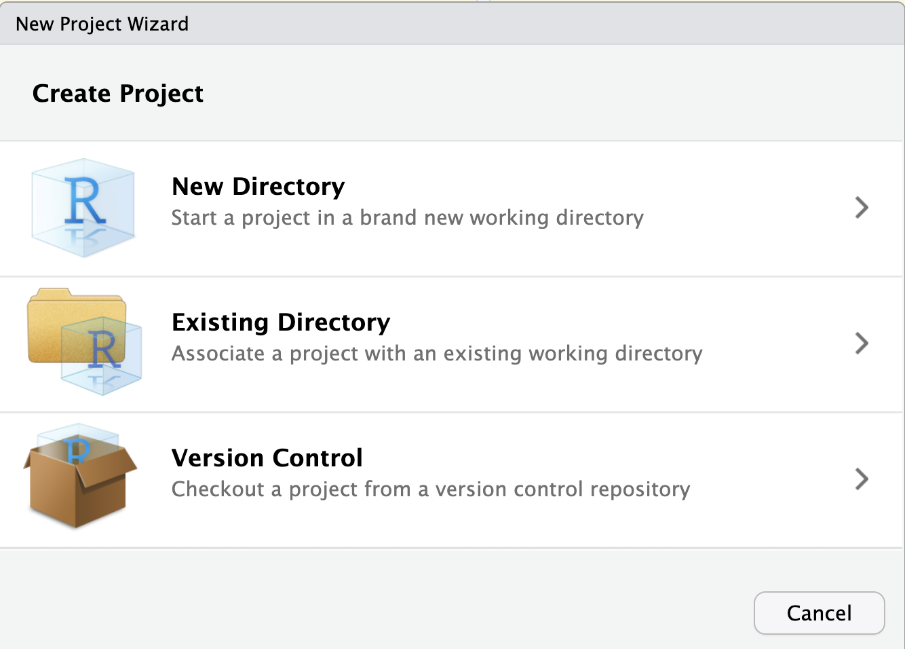
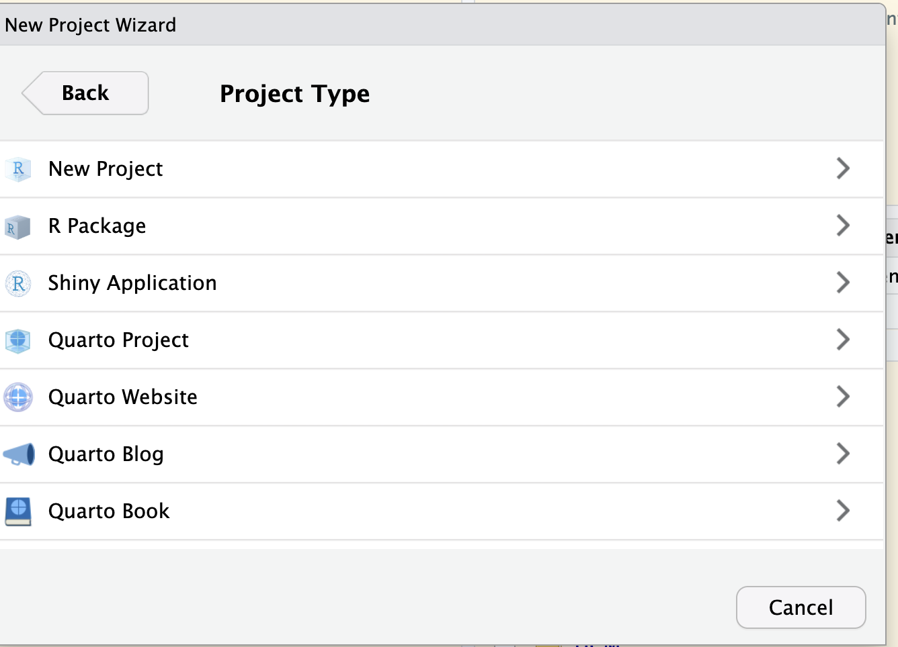
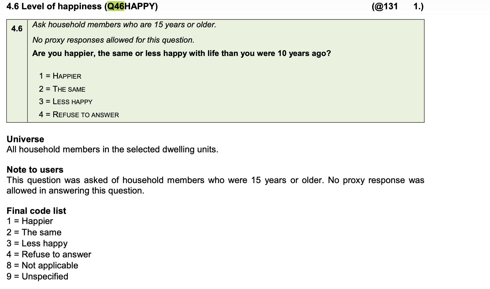

Data types and interacting with them
EKT 813
Prof SF Koch
2026-02-25
References
- We are still working mostly with Wickham, Çetinkaya-Rundel, and Grolemund (2023)
- Each of the chapters is fairly easy reading
- This week, I will mostly look at chapters 12-18
- Try to go through those, yes, even if you do not want to use R, there is some very good advice in it.
Packages
- Mostly same as last time
lubridate(Grolemund and Wickham 2011) for dealing with time
Data
- Living Conditions Survey (Statistics South Africa 2017)
Today’s objectives
- Communicating results
- Start a quarto file
- Include R script
- Compile as html
- Interacting with different data types
- Understand the different types
- Transform them and use them
Communicating results
Installing R and RStudio
A new project
- I work in RStudio projects
- They show up on the right
RStudio Header
Creating a project I
- Click on the project name (might be None)
Empty
Creating a project II
- Choose new
Choose New
Project directory
Project Directory
- Version control is worth learning, but outside scope of this module
What happens when choosing new?
New Project New Directory
What happens when choosing existing?

New Project Existing Directory
Then what?
- Choose whichever way you want to go
- Do not be afraid to delete and start over
- There will be a
name.Rprojfile in your folder, based on whatever name you gave the directory/project. - You can then open a new document: there are many types, feel free to play
- We will focus on
Quarto Documents
Choosing a Quarto Document
- Click on the + in the upper left
- Gives a pull down menu, choose Quarto Document
Choose Quarto
You get a baseline .qmd file
- There are a few steps to go through
- Give a title and an author
- Most of the rest you can leave for now, but feel free to experiment
Untitled1.qmd
- If there are no others, you get a baseline qmd file, numbered
1. - If others are open, the number can differ
- I recommend immediately saving this new file as something more meaningful
- Press the ‘floppy disk’ on the left
- A Save box opens
The save box and renaming
- Click on the project name (might be None)
- I presume people know how to save by now…
Save Box
What is in the initial qmd file?
- The yaml
YAML Ain’t Markup Language - The title will be what you gave it
- The author will be what you gave, too
- For now, we will use html (papers mostly in pdf and latex, though)
- The editor can be visual or source, I normally work with the latter
Standard yaml
Basic file I
- The file contains two headers (sections)
- Quarto
- Running Code
- These are not numbered, but you can ask for it to do so
- You can also ask for a table of contents
Basic file II
- The visual version tries to show us what it will look like
- The source version is simpler for me
- Headers are based on
#- One for top level
- Two for next level
- and so on
Numbered sections and table of contents
- Easiest is to edit the yaml
- There are other options out there, “search” for things you might want
Revised YAML
Basic R options
- I always try to add an
optionschunk - Discuss…
r setup
libraries?
- R work often depends on packages
tidyvsersefor example- I normally put all the libraries in the ‘setup’ chunk.
- type
library(tidyverse) - Add any others the same way _ Of course, they need to be installed an updated
- You could do this in the setup or another r chunk…
How to add an R chunk?
- Click on the green C+ icon
- The pulldown gives options
Chunk Options
A named chunk (last week)
- Discuss the details
Named Chunk
An unamed chunk (last week)
- Discuss the details
Unnamed Chunk
Cache, lbl and dependson
- Caching stores code and output
- If labelled, and ‘referenced’, R is not necessarily updated.
- Imagine
- R chunk labeled “A” creates some data
- Chunk “B”, uses data created in “A” for a regression
- Chunk “C” depends on “B” results
- If Chunk “C” changes, no need to rerun “A” or “B”
- If “A” changes, both “B” and “C” are rerun
- If “B” changes?
Logical Data
Logical values
- Logical values are T/F or TRUE/FALSE
- We can make them numeric
A logical vector
- We can take the mean of such a vector
- We can take the sum
Conjunction and disjunction
The “&” - AND - operator
The “|” - OR - operator
A few more examples
A vector comparison
[1] TRUE FALSE TRUE[1] TRUE FALSE FALSE- We typically use expressions that become TRUE or FALSE…
Expressions
Vector expressions
The courses data from last week
The filter command
- Chooses rows based on a logical expression
- If TRUE, kept
- If FALSE, dropped
The results
| All | Ekn 110 | |
|---|---|---|
| rows | 1477 | 50 |
| columns | 13 | 13 |
Multiple filters
# To get both, we need "or" not "and"!!!
ekn_110_120 <- courses_clean |>
filter(course_desc == "Economics 110" |
course_desc == "Economics 120")
z <- cbind(dim(ekn_110), dim(ekn_110_120))
rownames(z) <- c("rows","columns")
colnames(z) <- c("Ekn 110", "Ekn 110-120")
kbl(z, caption = "Dataset differences from filtering: Ekn 110 and 120")| Ekn 110 | Ekn 110-120 | |
|---|---|---|
| rows | 50 | 99 |
| columns | 13 | 13 |
Factor data
What is a factor (in R)?
- Used for categorical data
- Can be numerical or in characters
- Numerical binary \(\in \{0,1\}\)
- Character binary \(\in\) {“Sad”,“Happy”}
- Ordered or not
- Order implies the numbers are “ranked”: \(\{0,1,2,3\}\) ranks them
- Not implies no ranking: {“Green”, “Blue”, “Red”}
Read in LCS Data
Use the labelled feature
Western Cape Eastern Cape Northern Cape Free State Kwazulu Natal
10023 11462 5205 7345 15388
North West Gauteng Mpumalanga Limpopo
7378 11248 9246 11611 If the data is not labelled I
If the data is not labelled II
wc ec nc fs kzn nw gp mp lp
10023 11462 5205 7345 15388 7378 11248 9246 11611 The factor() command I
- Requires a variable name
- Requires the levels to be listed
- Here, it is the sequence
1:9 - We can also use
seq(1:9) - Means all numbers from 1 to 9
- Levels defines the order
- The order can be chosen by you
- They must be “mutually exclusive”
- But, they can be combined
- Here, it is the sequence
The factor command II
- Does not require labels
- If not given, the numbers are used
- But, they are factors and not numbers
- The labels MUST match the levels in the levels order given
- Otherwise, you have ‘gargbage’
- Expressions typically based on the label
- Can use
as.numeric(), but numbers may change (ouch!) - R factors usually start at 1, not 0!!!
Interacting with factors
1 2
5509 5739 < table of extent 0 >< table of extent 0 >Using as.numeric() on a factor
1 2 3 4 5 6 7 8 9
10023 11462 5205 7345 15388 7378 11248 9246 11611
wc ec nc fs kzn nw gp mp lp
10023 11462 5205 7345 15388 7378 11248 9246 11611 With a typical dummy?
male female
42155 46751
0 1
46751 42155
1 2
46751 42155 Ordered factors
- Previous factors were not ranked
- One is not better/worse than another, continuing onward
- What about
q46happy? - Next slide…
- Note, there are also missing values
The happiness question in the LCS
Happiness Question
Creating an ordered factor
- Can use
factor(x, ordered = T) - Can use
ordered(x)
Maybe, we want to drop some bad levels?
Months
mons
April August December February January July March May
2 4 1 2 3 1 1 1
November October September
5 1 3 Order it?
mons.ord
January February March April May June July August
3 2 1 2 1 0 1 4
September October November December
3 1 5 1 Time
Most likely of interest
- Birthdays or dates
- Month and year for annual data
- Quarter and year for quarterly data
- We will use
lubridate - For this, I am going to use some data one of my student’s had from the GHS (Statistics South Africa 2016)
- Technically, the data is for more years, but only giving a generic reference. It is also available through DataFirst.
Reading in the data
- We had to ask for the birthday information
- It is part of the survey, but almost never provided in the data..
- Birth dates look logical
Quick look
How close are birthdays to the beginning of th year? Part I
# A tibble: 6 × 5
bdate educ byear jan1_byear jan1_date
<date> <dbl> <dbl> <chr> <date>
1 1999-08-13 8 1999 19990101 1999-01-01
2 1986-08-08 11 1986 19860101 1986-01-01
3 1993-03-20 11 1993 19930101 1993-01-01
4 1968-09-28 7 1968 19680101 1968-01-01
5 1984-07-10 12 1984 19840101 1984-01-01
6 1976-01-29 12 1976 19760101 1976-01-01How close are birthdays to the beginning of th year? Part I
# A tibble: 6 × 7
bdate educ byear jan1_byear jan1_date days_from_jan1 day_from_jan1
<date> <dbl> <dbl> <chr> <date> <Period> <dbl>
1 1999-08-13 8 1999 19990101 1999-01-01 224d 0H 0M 0S 224
2 1986-08-08 11 1986 19860101 1986-01-01 219d 0H 0M 0S 219
3 1993-03-20 11 1993 19930101 1993-01-01 78d 0H 0M 0S 78
4 1968-09-28 7 1968 19680101 1968-01-01 271d 0H 0M 0S 271
5 1984-07-10 12 1984 19840101 1984-01-01 191d 0H 0M 0S 191
6 1976-01-29 12 1976 19760101 1976-01-01 28d 0H 0M 0S 28Simple date things
[1] "2011-06-04"[1] "2011-06-04"[1] "2011-06-04"[1] "2011-06-04 12:00:00 SAST"[1] "2011-08-10 14:00:00 SAST"Division I
Division II
- What is a fraction of a month?
- Integer Division
Time Periods
Addition - Fun Fact I
- Hmmm, we cannot add months. Why not?
[1] "2020-01-31" NA "2020-03-31" NA "2020-05-31"
[6] NA "2020-07-31" "2020-08-31" NA "2020-10-31"
[11] NA "2020-12-31"- Many months do not have 31 days!!
Addition - Fun Fact II
- But we can add months here?
- Why the difference?
[1] "2020-01-01" "2020-02-01" "2020-03-01" "2020-04-01" "2020-05-01"
[6] "2020-06-01" "2020-07-01" "2020-08-01" "2020-09-01" "2020-10-01"
[11] "2020-11-01" "2020-12-01"- Day of the month?
- But, first of the month
Addition - Fun Fact III
- Now, we are using a specific time function
- This function adds months
- But, pays attention to the day of the month
References
References
Grolemund, Garrett, and Hadley Wickham. 2011. “Dates and Times Made Easy with lubridate.” Journal of Statistical Software 40 (3): 1–25. https://www.jstatsoft.org/v40/i03/.
Statistics South Africa. 2016. “General Household Survey 2015 [Dataset].” Pretoria, South Africa: Statistics South Africa. http://microdata.worldbank.org/index.php/catalog/2773.
———. 2017. “Living Conditions Survey 2014–2015, South Africa.” DataFirst, University of Cape Town; Statistics South Africa. https://microdata.worldbank.org/index.php/catalog/2882.
Wickham, Hadley, Mine Çetinkaya-Rundel, and Garrett Grolemund. 2023. R for Data Science: Import, Tidy, Transform, Visualize, and Model Data. 2nd ed. Sebastopol, CA, USA: O’Reilly Media. https://r4ds.hadley.nz/.